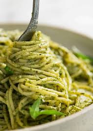

Pesto Pasta

Description
Pesto is that wonderfully green sauce that offers a flavor that can best be described as bright and pungent,
with a basil-forward, herbaceous garden aroma suspended with delicate olive oil,
enriched with pine nuts (pignoli),
and kicked into overdrive with Italian cheeses and garlic
Ingredients
- Dried pasta
- Fresh basil
- Parmesan cheese
- Pine nuts
- Garlic
- Olive oil
- Salt and pepper
Steps
- Cook pasta according to package directions.
- While pasta is cooking, make pesto by combining basil, Parmesan cheese, pine nuts, garlic, olive oil, salt,
and pepper in a food processor or blender.
- Drain pasta and toss with pesto.
- Serve immediately with additional Parmesan cheese if desired.